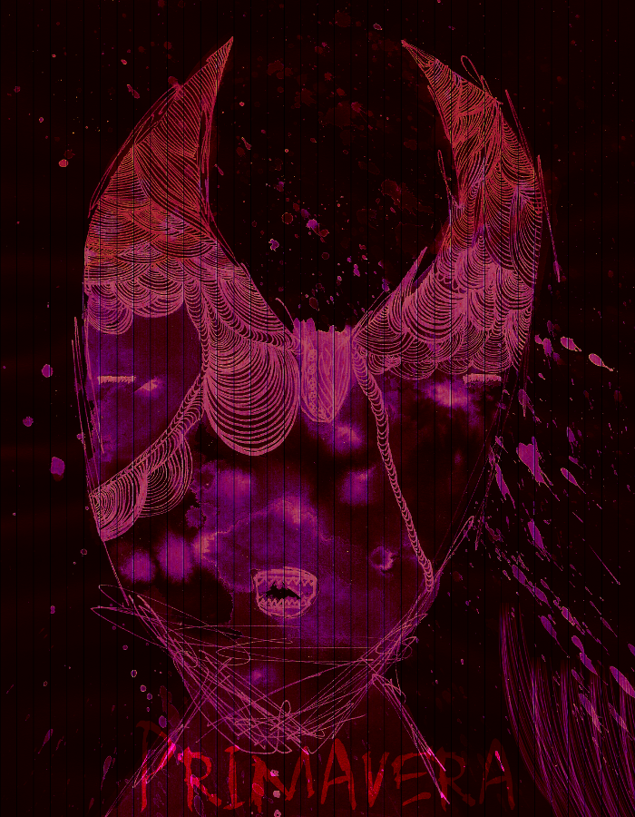

*por siliamoan
A primavera chega nesse vão, com um respiro cheiroso de flores.É no vão que existe o momento de discussões, do ir ou ficar, do fazer ou construir de uma nova forma.

Maneiras atreladas a falta de recurso, a percepção de petalas que podem florir, mas que acabaram de passar pelo frio de estalar os galhos e pedem um formato mais orgânico de existência.
Dizem que é o último ano.
Alguns querem vender, outros acreditar.
Uma passagem melhor? Seja espiritual, seja um avião para Quito ou para Santarém. Ficar perto dos amores. Seria a primavera um laboratório sazonal de experimentação com cores, elementos gráficos e cheiros?
A musa xxxxx [6], regente desse fim e do começo, surge inspirando os traços de tratados e acordos para um fim/começo mais honesto. Um oi, um carinho e uma verdade. Acompanhados de uma flor podem ser mais cuidadosos, e lá fora tem um tanto que a musa xxxxx [7] rege para que possamos soprar todas ao redor.